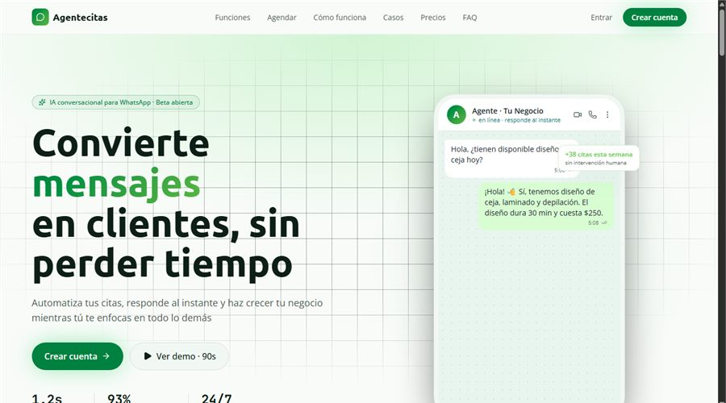

PROYECTO / 07
Agentecitas
Agente conversacional para WhatsApp que automatiza la atención, agenda citas, gestiona servicios y centraliza el seguimiento operativo de negocios con asistencia inteligente.

El problema
Atender consultas y coordinar citas dentro de las conversaciones de WhatsApp.
La solución
Un agente conversacional para atención, agenda de citas y seguimiento de servicios.
DEMO VISUAL ILUSTRATIVA · 18 SEGUNDOS
Mira el flujo en acción
Interfaz representativa con datos ficticios, basada en las funciones descritas del proyecto. No es una grabación del producto ni reproduce su interfaz exacta. No conecta sistemas ni realiza operaciones.
Una consulta llega por WhatsApp
Servicio de ejemplo: consulta
Esperando opcionesEl agente propone horarios
La persona elige antes de continuar.
La persona elige y revisa
Persona de ejemplo
Pendiente de confirmaciónNo se ha reservado ninguna cita.
Leer la descripción del recorrido
Recibir una consulta
Mensaje ficticio: «¿Tienen un horario disponible para una consulta?»
Proponer opciones
Respuesta ilustrativa: «En este ejemplo, hay horarios a las 10:00 y a las 16:30. ¿Cuál prefieres?»
Confirmar con la persona
Mensaje ficticio: «Prefiero las 16:30». Este recorrido no reserva citas ni envía mensajes.
También puedes leer los tres pasos a tu ritmo.